垃圾分类，一件必须要做的事情
来源：北京东城
随着上海垃圾分类进入“强制时代”，北京市垃圾分类立法工作也提上日程，不履行垃圾分类责任的单位和个人将面临罚款。北京试点推行垃圾分类已逾20年，近日，记者实地走访东城区多地了解公众参与垃圾分类的情况。
现状
今年前5月生活垃圾同比减量1.5万吨
近日，东城区生态环境局发布垃圾分类工作成效：1-5月全区生活垃圾同比实现减量1.5万吨。
今年年初，东城区印发了《东城区垃圾分类全覆盖工作方案》，以全市“干湿分开”“大类粗分”为原则，按照“厨余垃圾、再生资源、其他垃圾、有害垃圾”进行分类投放处理，建立垃圾分类长效工作机制。
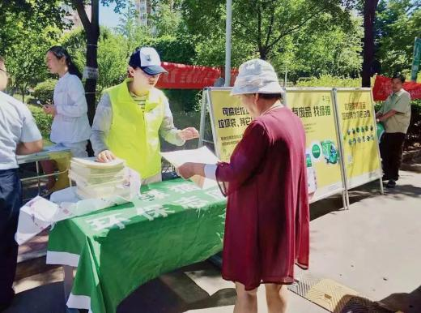方案提出，截至2019年底，全区垃圾分类工作制度和标准体系基本完善，厨余垃圾分出率达到10%以上。截至目前，全区787家党政机关实施强制垃圾分类，2737家餐厨餐饮企业已纳入规范管理，17个街道实现垃圾分类全覆盖。
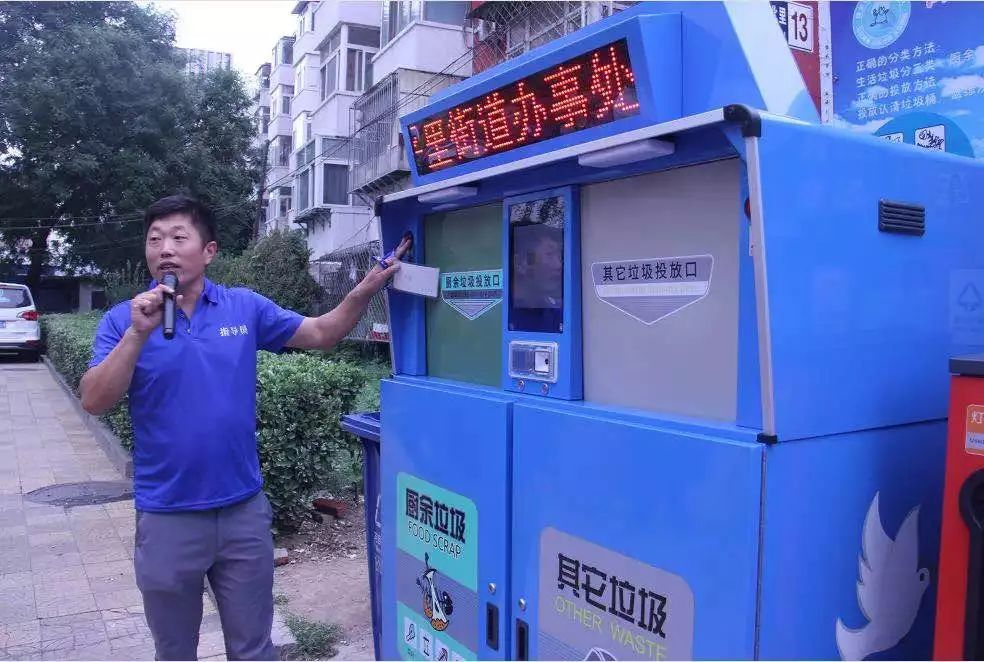在前端分类设施建设上，东城区已安装完成2600组垃圾分类收集容器，东花市、天坛、崇外、建国门、龙潭等街道设计了集宣传、投放、称重、积分等功能为一体的分类投放设施。在分类运输体系方面，东城区95辆前端分类电动收运车在片区内循环收运，每个街道设立1-2个餐厨（厨余）垃圾转运收集点，与环卫集团39辆纯电动餐厨（厨余）垃圾运输车辆对接。
举 措
垃圾分类将纳入年终绩效考核
从目前情况看，全面、细致地落实垃圾分类工作成为全区亟须解决的问题。记者从区城管委获悉，东城区近期将召开全区垃圾分类动员大会，对垃圾分类工作进行再部署，将垃圾分类工作纳入年终绩效考核，对工作开展不力，产生严重影响的及时予以问责。
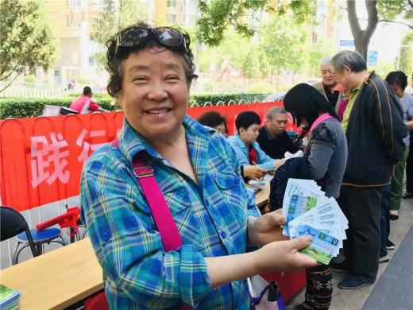在宣传方面，东城区今年计划组织100场针对中小学、党政机关、街道、行业单位和社区居民的垃圾分类讲座培训、参观实践及交流推广活动，并编制了全市首部中小学生垃圾分类行动指导手册，推行垃圾分类进校园，让垃圾分类“进学校、进课堂、进教材”；在鼓励引导方面，目前东城区采取积分兑换方式，未来将探索垃圾分类积分与停车管理、居家养老等服务流通兑换。
案例
社 区
智能垃圾分类箱让居民“自己分”
一大早，新怡家园的居民刘大妈提着垃圾袋来到小区智能垃圾分类箱前，将写有自己姓名的二维码卡片在扫描仪前一刷，“厨余垃圾”的投放口缓缓打开，刘大妈将垃圾袋里的瓜果皮、菜叶子、剩饭倒入投放口，然后将垃圾袋投入旁边的“其他垃圾”投放口。
“我们社区推行垃圾分类一年半了，起初很多老人和我一样，不知道厨余垃圾怎么分，更不清楚垃圾袋不能扔在厨余垃圾桶里，是街道举办的宣传活动和垃圾分类指导员的指导，让我们学会了正确的分类方法。”刘大妈向记者传授了垃圾分类的小窍门：“厨房里放两个垃圾桶，一个放厨余垃圾，一个放其他垃圾，厨余垃圾袋不要系上，倒的时候直接一扣，方便还不容易弄脏手。”
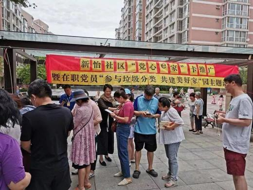垃圾分类指导员韩大妈上岗快1年了，每天8个小时守在垃圾站旁，指导居民垃圾分类。“大棒骨不算厨余垃圾，要放到其他垃圾里，泡沫塑料是可回收资源。”韩大妈说，经过长时间指导，老人们基本能做到垃圾分类。
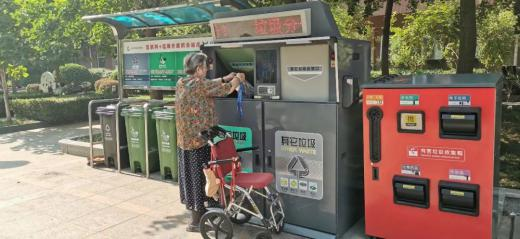崇外街道相关负责人介绍，新怡家园社区有居民1470户，目前垃圾分类的参与率达到80%。在此基础上，小区近期投放了智能垃圾分类箱，让大家从“指导分”慢慢过渡到“自己分”。
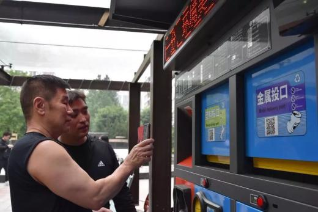现场，由智能垃圾分类箱和3色垃圾桶组成的垃圾站干净整洁，不少居民选择智能垃圾分类箱投放。“智能垃圾分类箱方便快捷，居民参与积极性较高。厨余垃圾每天能收集近400升，居民分拣的准确率达70%以上；可回收资源多为报纸、塑料瓶、衣服等。”垃圾公司相关负责人介绍，分好类的垃圾可按重量或数量积分，1积分相当于1分钱，可兑换大米、手纸等礼品。为鼓励分类，投入智能垃圾箱的可回收资源价格高于市场价格。
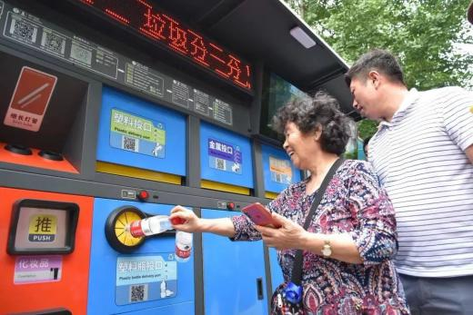“居民将分类垃圾投放后，不同种类的垃圾将分别运往不同的地点进行处理。厨余垃圾被运至指定点位用于沤肥，其他垃圾被运至小区里的垃圾楼，由环卫集团分类清运至相应的处理厂进行处理。在此过程中，各类垃圾的产生量及去向会实时上传至崇外街道垃圾分类全过程监管平台上。”崇外街道网格化服务管理服务中心工作人员介绍，平台可以统计各小区产生垃圾的数量、各类垃圾的数量、辖区内各产生主体日常垃圾量等数据。
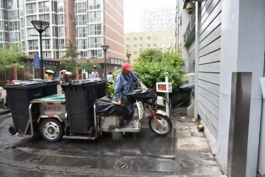据了解，目前新怡家园社区参与垃圾分类的多为老年人，为扩大参与群体，崇外街道计划在暑期举办儿童垃圾分类宣传活动，通过小手拉大手的方式，带动中青年人参与垃圾分类。
楼 宇
分类智能化 管理精细化
中国石油大厦以分类智能化、管理精细化为垃圾分类主要原则——地下四层一间“特殊”的垃圾“回收站”通过管道连接至楼内每一层的垃圾投放间，保洁人员将垃圾打包后，便可通过管道统一投放，经过抽空、压缩装入集中回收箱内。
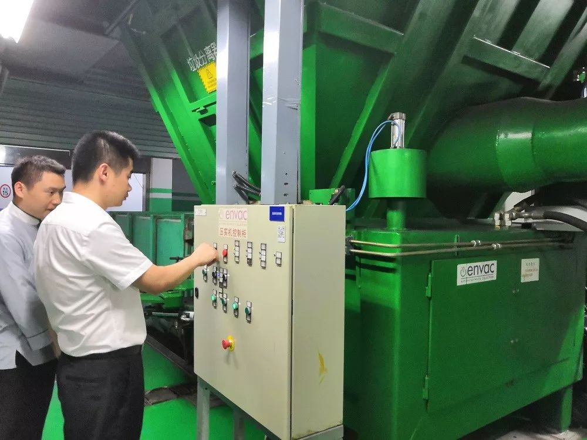另外两间特殊的垃圾“回收站”，位于地下三层。在这里，厨余垃圾会经过专业设备的粉碎、脱水，去除70%至80%的水份。“大约可以将5桶垃圾的体积缩减为1桶。”负责大厦物业管理的中油阳光物业公司餐饮后勤管事部经理相建介绍说。
综合考虑建筑整体风格等因素，大厦内其他供工作人员日常使用的垃圾桶并未采用传统的四色分类垃圾桶，而是采取了统一样式，用文字和图示标明分类。据中油阳光物业公司管家部公区保洁主管吴峰介绍，结合商务楼宇垃圾投放的特点，大厦内设置了少量的“有害垃圾”回收箱，用于投放电池等。
商 街
簋街商家自制处理“神器”
下午3时，虽然已过了午间用餐高峰期，簋街胡大饭馆总店中仍有10余桌客人就餐。“总店客流量能达到日均2000人。”店长曹文利介绍，小龙虾和火锅不一样，火锅是越吃越少，小龙虾却是越吃越“多”。
“多”，指的是美食背后大量的餐厨垃圾。就拿吃小龙虾来说，一盆小龙虾会产生两盆龙虾壳；容量240升的厨余垃圾桶，每天大约装满20个，总量约4800升。这么多的餐厨垃圾，如何处置？
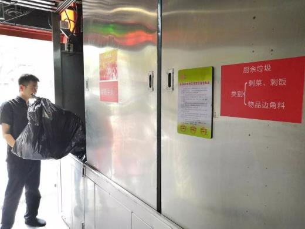在饭店后厨，记者发现了一个不锈钢材质的垃圾存放间。一侧的推拉门上写着“生活垃圾”，推开后，里面是一包包用黑色塑胶袋包装好的垃圾；另一侧的推拉门上写着“厨余垃圾”，里面整齐码放着绿色厨余垃圾桶。
除了用于减少异味和蚊蝇滋生的风扇、灭蝇灯，存放间内一条蓝色的管道十分显眼。管道的源头位于洗碗间一个“特殊”的装置——油水隔离器，这是胡大餐饮有限公司总经理郭冬自行设计、发明的。隔离器的外观类似洗碗池，一侧采用斜面设计，具有隔油功能。从餐桌上收回的厨余垃圾，首先会倾倒入隔离器内。经过隔离，油会直接下到地下的隔油池，残渣再投入厨余垃圾桶。
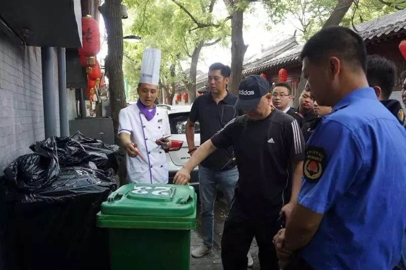“以前因为设备密封不好，存放或清运时经常有油污流到地面上，需要二次清理。”曹文利记得自己有一次曾带着员工清理了两个多小时的路面，“现在不一样了，隔离后的厨余垃圾水、油含量降低了，既减轻了重量、便于清运，又干净卫生。”
与胡大饭馆总店一墙之隔的花家怡园、仔仔等餐饮企业，也在垃圾分类方面采取了相应措施。据北新桥街道簋街管理委员会工作人员介绍，目前簋街共有95家餐饮企业基本实现了按照相关规定执行厨余垃圾分类存放、清运。
东城区首创《学生垃圾分类行动手册》
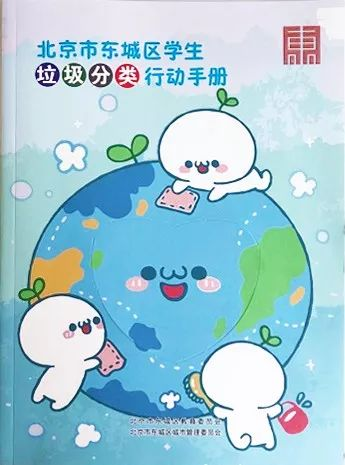7月11日，由区教委、区城管委联合编制的《北京市东城区学生垃圾分类行动手册》发布，该手册是全市第一本针对中小学生设计的垃圾分类行动手册。
该手册中不仅有垃圾分类小知识和分类方法明细，还以图文并茂的形式倡导学生发现身边的绿色，发挥想象力变废为宝。其中的“垃圾分类21天行动计划”，倡导学生利用暑假时间，坚持21天垃圾分类，并将每日的垃圾分类情况记录在手册上。
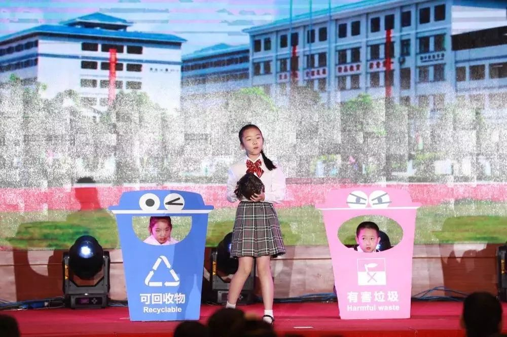区教委主任周玉玲表示：“这本手册已发到全区近10万中小学生手中。我们希望以‘小手拉大手’的形式，通过学生将垃圾分类理念和方法带入每一个家庭，带动整个社区。在今后的工作中，区教委将继续组织开展专家讲座进校园、垃圾分类知识竞赛等系列环保主题教育活动，培养学生做环境保护的宣传员和践行者。”
垃圾分类在中国并不是一个新话题。事实上，北京自1996年就开始试点推行了，它在过去20多年遇到的所有问题，其他城市都遇到过或者仍将遇到。
东城区首创《学生垃圾分类行动手册》
垃圾分拣员
63岁的王秀芳（化名）是一名厨余垃圾分拣员，每天早上六点半，她准时赶到三里屯街道北三里社区的一个老居民小区里。六点半到十点半之间，是小区居民扔垃圾的早高峰，她推着一辆自行车在小区里来回巡视，一有新出炉的垃圾袋，王秀芳就停下来，开始动手分拣。
王秀芳负责14组垃圾桶，她的主要任务是把厨余垃圾分拣到绿色的厨余垃圾桶里。她是河北邯郸人，穿着绿色工作服，戴黑色口罩、长舌遮阳帽。被随手抛进桶的垃圾袋往往系得紧紧的，一撕开，里面的果皮、菜叶、剩饭剩菜、废纸、塑料还有难闻的味道都爆裂出来。王秀芳先用手把其他垃圾拨弄到一旁，剩下的倒进绿桶里，然后转身从自行车上取下长腿木夹，把刚才没有挑出的其他垃圾夹上来。她不戴手套，动作熟练，一两分钟就能分完一袋，对桶里发出的恶臭早已习惯。
王秀芳负责14组垃圾桶，她的主要任务是把厨余垃圾分拣到绿色的厨余垃圾桶里。她是河北邯郸人，穿着绿色工作服，戴黑色口罩、长舌遮阳帽。被随手抛进桶的垃圾袋往往系得紧紧的，一撕开，里面的果皮、菜叶、剩饭剩菜、废纸、塑料还有难闻的味道都爆裂出来。王秀芳先用手把其他垃圾拨弄到一旁，剩下的倒进绿桶里，然后转身从自行车上取下长腿木夹，把刚才没有挑出的其他垃圾夹上来。她不戴手套，动作熟练，一两分钟就能分完一袋，对桶里发出的恶臭早已习惯。
公司给王秀芳的最低工作量是每天一桶半，如果不是小区新近开业的一家饭店，她会担心达不到要求。小区里住的主要是老人和年轻北漂，老居民生活节省，年轻人大多不在家做饭，产生的厨余垃圾少于平均量，新开业的饭店暂时弥补了这个缺口。如今，王秀芳每天收集到2桶厨余垃圾，每桶容量120升，她的同事会定期骑着三轮车过来，把垃圾桶转运至附近的垃圾楼里。
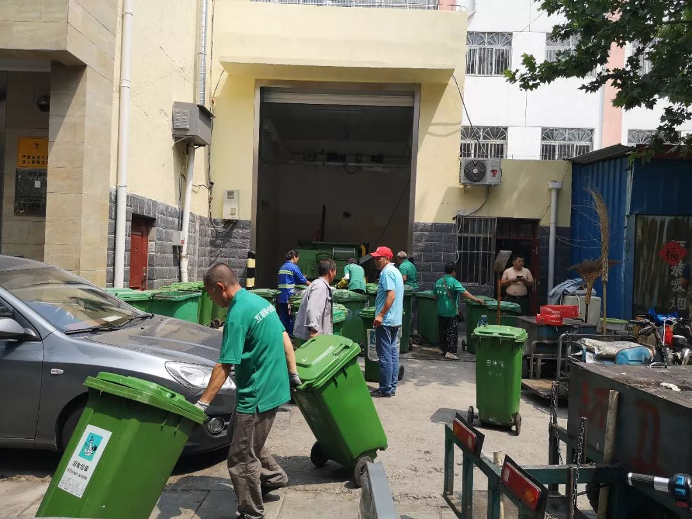三里屯地区某垃圾楼，工作人员正在转运从小区里收集来的厨余垃圾（张从志 摄）
在那里，我们遇到了坐镇指挥的项目经理，一个年轻人，挺着个肚子，上身T恤，下穿短裤，戴着口罩。经理告诉我们，他们公司在北京承包了很多社区的厨余垃圾收运工作，流程是街道和公司签合同，由公司向各个小区派出分拣员，厨余垃圾集中到垃圾楼后，接下来的运输和处置就交给北京环卫集团。按照小区告示栏上的“生活垃圾分类体系建设情况公示表”，这些厨余垃圾会被运到位于大兴区瀛海镇的南宫堆肥厂。
这位经理介绍，在三里屯项目区，他们一共布置了100多个厨余垃圾桶，一天可以收上约50桶厨余垃圾。垃圾楼为他们单独开辟了一块厨余垃圾转运的场地，和其他垃圾的处理隔离开来。站在旁边说话，一阵阵恶臭扑面袭来，十余个工作人员正忙着从车上卸下垃圾桶，大都是老人面孔，说外地口音，污渍斑斑的工作服背后写着“互联网+垃圾分类”。垃圾分类和“互联网+”有什么关系？经理解释说，为了鼓励居民主动分类，他们开发了一款APP，居民可以把分好的厨余垃圾拿去找分拣员积分，满一定积分后可以兑换生活用品。
但王秀芳告诉我，大部分分拣员年纪大，不会使用智能手机，也很少有居民来找她扫码积分，“基本没有人会自己分。”我们按照经理的指示找到了位于幸福三村一处积分兑换点，也没有找到现场负责的工作人员。附近的老居民告诉我们，社区前两礼拜给各家发了垃圾桶，一个大的一个小的，但是有人拎着厨余垃圾出来，也没见人在那里兑换，只能顺手扔进了垃圾桶。
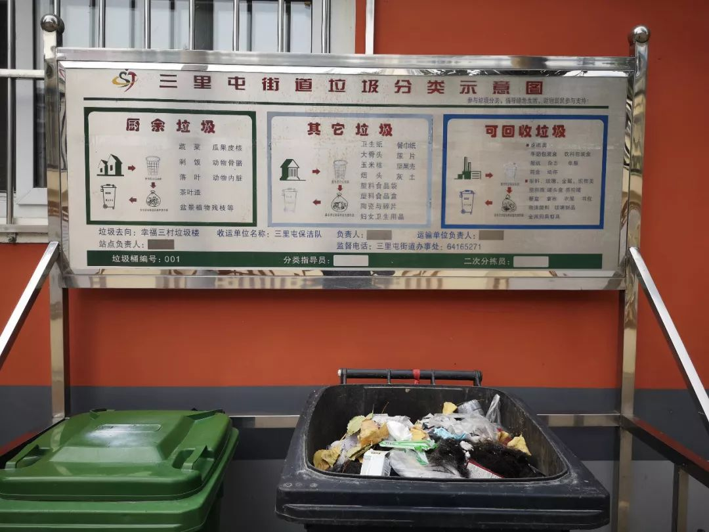三里屯某小区垃圾投放点（张从志 摄）
一名社区卫生负责人告诉我们，社区经常搞宣传动员、开讲座，为了吸引大家来还发放小礼品，但是每次来的都是那几个老居民。而且，老旧小区绿化率不高，没有空余的场地，垃圾桶放在谁家楼栋门口，大家都要争来争去，要让大家自己去分类，难上加难。谢新源所在的环保组织零废弃联盟最近启动了一个关于北京垃圾分类的调研项目，他们和志愿者一起分成几个小组，目前已经实地走访了40多个居民小区，其中大部分还是北京垃圾分类的试点小区。但他们发现，在这些试点，居民主动分类的比率也都不到10%。
自上而下的二十年
2007年，北京大学环境科学与工程学院启动了一项大规模居民家庭垃圾调查，当时在读研的谢新源参与了其中垃圾组分调查和报告撰写工作。“当时找了6个社区，总共120户，把居民的垃圾用专门的桶收集起来，还雇了一个阿姨帮忙分拣，收集了一个星期，分析后发现厨余垃圾占到了70%左右。”
厨余垃圾一直是中国城市垃圾分类的重中之重。清华大学环境学院教授、固体废物处理与环境安全教育部重点实验室副主任刘建国向本刊介绍，国内生活垃圾的整体含水率在50%左右，有的地方甚至高达60%，而国外这一数字通常在20%左右，导致这一差异的主要因素就是生活垃圾中的厨余垃圾占比太高，而这与我们的餐饮习惯、生活方式紧密相关。“含水率高，垃圾品质就低，处理起来相对困难。”
当厨余垃圾和其他垃圾混合后，无论是填埋、焚烧，都会提高处理成本，而且会导致二次污染。拿去焚烧，含水率过高会极大地降低垃圾的热值，不利于控制焚烧炉的温度，增加二恶英的产生概率；拿去填埋，极易产生臭味，增加有毒有害滤液。目前公认的解决厨余垃圾最有效的办法就是堆肥，但堆肥对垃圾的纯度要求较高，如果混杂了过多的塑料包装物，透气性变差，堆肥效果便会大打折扣。
北京花大力气把厨余垃圾分拣出来，的确抓住了垃圾分类的一个重点，但是最前端的分类投放问题却一直得不到解决。北京环卫集团总经理助理、原北京市环境卫生设计研究所所长卫潘明告诉本刊，他认为，“垃圾分类很重要的一点是谁产生谁负责，谁投放就应该谁分类，如果你这个环节没有分类，那分类的意义就不大了。”
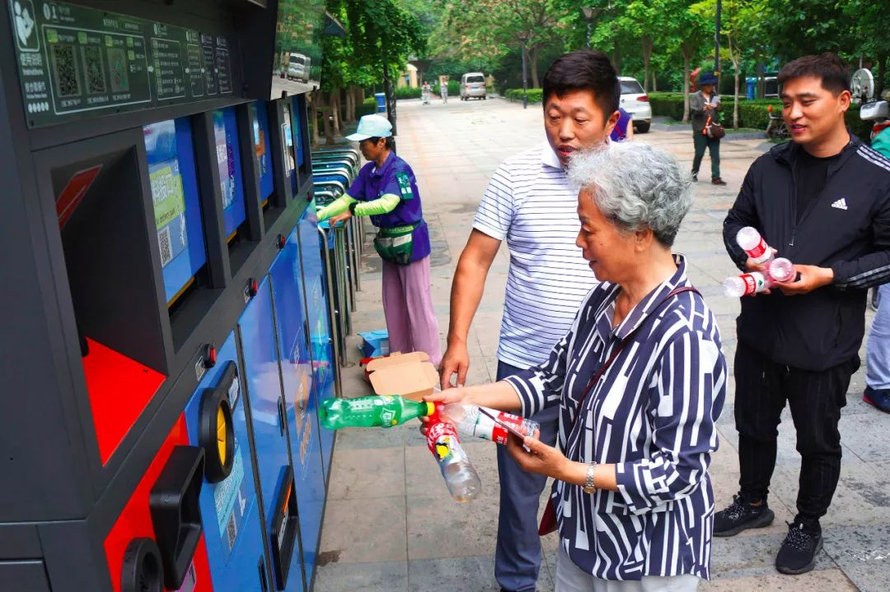北京市东城区崇外街道，工作人员现场为居民演示垃圾分类全过程监管平台使用方法（郭俊峰 摄；图 | 视觉中国）
北京是中国最早开始实行垃圾分类的城市，1996年前后，北京市率先在西城区大乘巷开展垃圾分类试点，从而成为全国第一个进行垃圾分类的试点。当时的主要做法是摆放分类垃圾桶，号召居民自己分类，但由于后端处理设施缺位，这些垃圾桶逐渐成了“摆设”。此后的十余年里，北京的垃圾分类一直未能走出这个窠臼。
长期跟踪研究北京垃圾问题的陈立雯博士把北京的垃圾分类划分为三个阶段，即奥运前、奥运后到2017年、2017年后。2000年，在申办奥运会时，北京向奥组委承诺：2008年前北京市垃圾分类收集率达到50%，资源综合利用率达到30%。这一年，北京市被住建部确定为全国八个垃圾分类收集试点城市之一。“但这一时期的垃圾分类停留在从一个桶变成两个或者三个桶的阶段，到后来又增加指标，比如垃圾桶旁边有没有竖牌子，有没有相关的指引信息，但都停留在硬件配置上。”陈立雯说。
零废弃”村落发起人陈立雯（刘锋 摄）
奥运之后，北京继续推动垃圾分类。从2010年开始，先划出了600个试点小区，第二年增加了1200个，接下来又逐步增加，政策措施也进一步升级。“比方说每家每户要配垃圾分类的小桶和两捆垃圾袋，也开始改造垃圾分类的收运设施，尤其是垃圾楼，还出现了绿袖标、二次分拣员、专门的厨余处理器、智能桶。”陈立雯告诉我，几乎所有关于垃圾分类的不同形式的尝试都是在北京最先出现，但收效甚微。在实践中，很多居民抱怨，自己分好了类，垃圾车来收运时又都混到了一起，大家自然也就对垃圾分类丧失了信心。
2010年，谢新源进入环保NGO自然之友，专门从事垃圾研究和政策倡导。这时，焚烧厂项目开始在全国各大城市上马，围绕垃圾焚烧的议题，焚烧派和反烧派打得不可开交。在争议中，垃圾分类的重要性凸显出来，两派至少在一点上取得了共识，那就是搞焚烧一定要做好分类，以减少焚烧带来的环境危害。
2008年，北京投资8亿元建成了第一家垃圾焚烧发电厂——高安屯焚烧发电厂，位于北京市朝阳区金盏乡。根据2013年3月，北京市委、市政府通过的《北京市生活垃圾处理设施建设三年实施方案(2013—2015)》，到2015年底，全市将建设44个垃圾处理项目，其中包括10座垃圾焚烧发电厂。北京市还决定要将焚烧、生化处理、填埋三种垃圾处理方式按照4∶3∶3的比例进行规划，据刘建国介绍，如今焚烧早已超过40%，生化处理的30%还没达到。
不过，焚烧项目大举推进的同时，垃圾分类却停滞不前。北京市想了各种办法来应对，除了用二次分拣员这样的廉价劳动力，也尝试过进口自动分选机器。谢新源曾去参观过小武基转运站，这里配备有从德国进口的垃圾自动分选设备。“混合垃圾运到一个分拣厂，在里面破袋，主要原理是根据滚筒的筛孔大小，把塑料、灰渣筛出去，剩下就默认为是厨余。虽然分拣效率高，但厨余里面还是会有很多小包装，影响到后面堆肥的效果。”即使分选效果更好，面对北京每天将近3万吨的生活垃圾，设备的投入也将是一个惊人的数字。
垃圾分类自上而下地推行了二十年，屡战屡败，解决方案终于又回到最前端的个人分类上。2017年3月，国务院办公厅发布《生活垃圾分类制度实施方案》，到2020年底，要在包括北京在内的46个城市先行实施生活垃圾强制分类，生活垃圾回收利用率要求达到35%以上。上海率先启动立法，并于今年7月1日开始全面推行强制垃圾分类。据报道，北京也将推动学校、医院等公共机构以及商业办公楼宇、旅游景区、酒店等经营性场所开展垃圾强制分类，并逐步实现全覆盖。
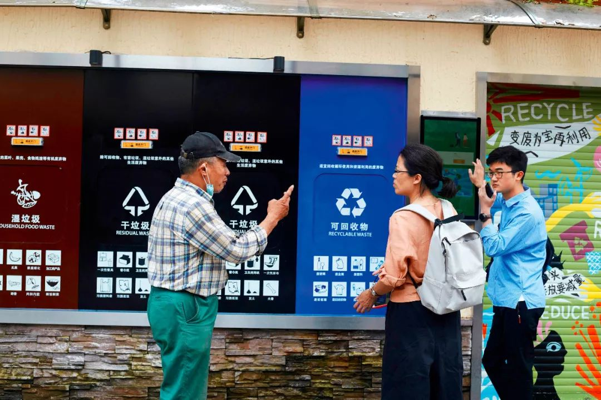7月1日，上海生活垃圾强制分类正式实行，为了迎接大考，各小区垃圾箱房进行了精心改造，设专人全天值班（刘锋 摄）
分类与回收的利益纠葛
和王秀芳在垃圾桶旁聊天时发生了有趣的一幕。当我正问起其他垃圾桶里的塑料瓶、易拉罐之类的可回收物如何处理时，她的余光瞟到一个年轻男子骑着自行车驶近，车把手上挂着一个大编织袋，王秀芳见状立刻压低了声调。等年轻男子远去，她才告诉我，自己并不认识这个年轻男子，但能卖钱的可回收物都会有专门的人来收，公司也不准分拣员动。
在过去，拾荒大军消化了出现在垃圾桶里的大部分可回收物。然而，随着大城市生活成本的提高和疏解整治行动的开展，以及废品回收行业利润的下降，这一体系事实上正在北京、上海这样的大城市迅速瓦解，很多城市居民已经很难在小区附近找到回收废品的小商小贩，街头拾荒者的身影也越来越少。如此一来，原本进入废旧物资回收网络的低值可回收物（如玻璃、废旧衣服等）大量混入生活垃圾收运网络，许多城市垃圾收运量普遍剧增。
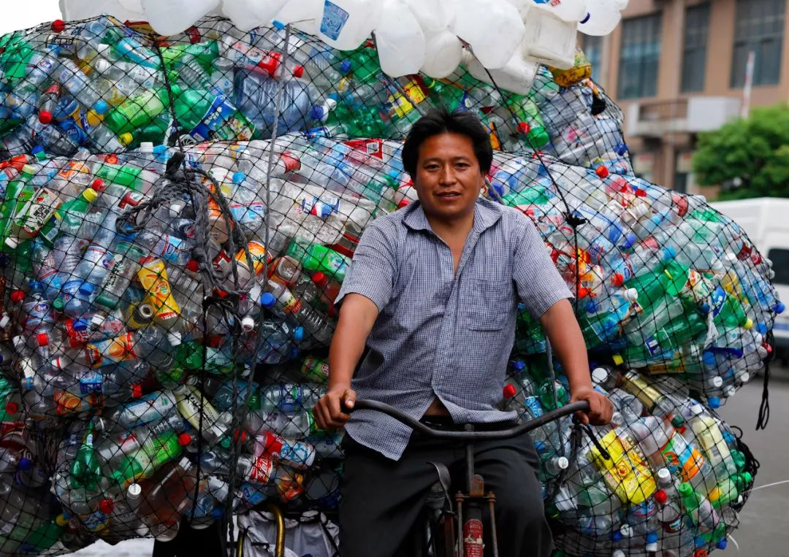《塑料星球》剧照
清华大学环境学院教授、循环经济产业研究中心主任温宗国分析称：“传统废旧物资回收可以直接在源头实现垃圾减量，源头垃圾分类越细，再生资源品位就越高，获利就越多，该回收网络垃圾分类积极性高。与之相反，传统环卫系统原生垃圾产生量、收运处置量越大，其获得的收入就越高，因此除了在处置设施超负荷倒逼外，没有推动垃圾分类和减量回收的动力。这两套独立运行系统在源头上存在的利益冲突，废旧物资回收和生活垃圾分类的两套系统缺乏统筹，必然降低城市固废分类、收运体系的运行效率。”
为了解决这个问题，上海强制垃圾分类的一个重要内容就是推动垃圾分类和回收“两网融合”。在一些小区，居民要想出售积攒起来的可回收物，只能打电话给指定的废品回收员，这些废品回收员由政府发执照，持证上岗，其他的小商小贩进入小区交易，相关部门可以进行处罚。
在过去，废品回收是市场主导，归工商部门管理，而垃圾收运是政府主导，归环卫部门管理。“它（可回收物）也是垃圾，而且是品质比较高的一部分，等于说你把肥的那一部分都拿走了，剩下瘦的，又没有得到很好的一个管理。”刘建国说，未来的一个趋势就是要统筹来考虑，“肥瘦搭配”，“垃圾处理的一部分成本可以在回收中得到一定的弥补，反过来讲，回收对垃圾减量做出了贡献，也应该得到一部分补贴”。
然而，“两网融合”并非易事。垃圾管理的条块分割严重，有的归街道管，有的归学校这样的事业单位管，有的是物业公司，每个系统都有各自的行事风格和禁忌，其他部门很难插手进去。在北京海淀某重点高校做废品回收十几年的一位老板告诉本刊，他觉得要想融合没那么容易，利益的问题不说，像他所在的大学有很多涉密材料，学校通常只会选择长期合作伙伴，这也是为什么作为学校家属的他能在里面干十几年的原因。
除了要解决垃圾领域里根深蒂固、错综复杂的利益纠葛，垃圾分类要推动，最根本的还是在于人，在于每个人能否改变自己的行为模式和生活习惯。
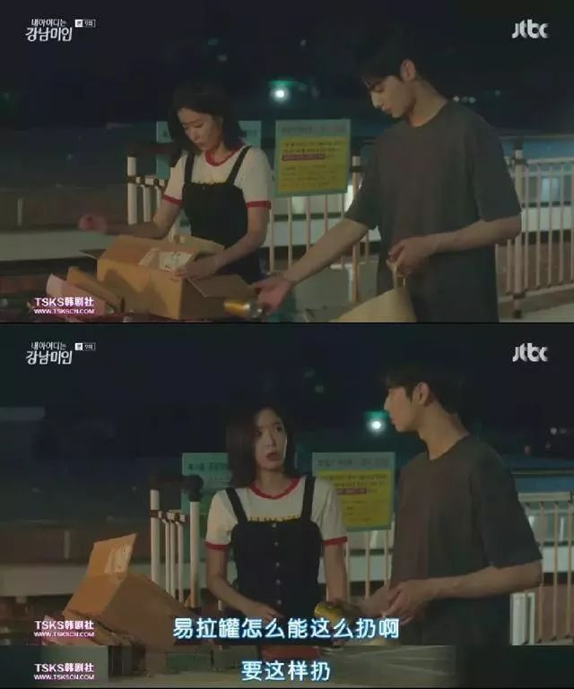对于最近上海推行强制垃圾分类，垃圾问题的相关研究者多表达了支持的态度。尽管过程当中争议不少，但受访者都认为，上海不应该单枪匹马，全国其他城市应该积极响应。“过去我们常常把垃圾分类当作一个道德层面的问题来谈论，不断贴标语、挂横幅，希望居民自觉分类，但它本质上其实是一个公共事务管理，和公共场合禁烟一样，离不开制度性约束。”陈立雯说。
在调研中，谢新源也在北京发现了一些做得好的小区。比如建国门附近有一个小区，各家可以自愿把厨余小桶放到小区门口的橱柜上，收运厨余垃圾的人每天都会称重，记录数据，更重要的是，居民进进出出都可以看到，在事实上起到了一个示范作用。一起调研的还有不少志愿者，其中既有全职妈妈、职场女性，也有在校大学生，他们有的希望推动自己孩子所在的学校开展垃圾分类教育，有的致力于在自己的社区推动垃圾分类。